功能概述
开启监控后，系统会以你的身份自动完成 PR 检视，你不需要守着页面等：
你在页面点「开启监控」→
自动读取 PR 的 diff / 门禁 / 评论→
AI 逐步检视代码→
给出评审结论→
回写评论到 GitCode PR
全过程人工控制：只有你点「开启」才会启动，随时可「关闭」。
前置条件
- GitCode 账号，且在监听仓库（CPF-Flutter/flutter_flutter）已提交过 PR
- GitCode 私人令牌一枚，按下方的权限范围勾选（创建入口：GitCode → 设置 → 安全设置 → 私人令牌，或访问 新建访问令牌）
配置访问令牌的权限范围
对照 GitCode 令牌创建页逐行设置（绿色为推荐档位，其余保持默认或选「禁止」）：
用户
访问你的个人信息、最新动态等 ▾
读写只读禁止
key：查看、部署、删除你的公钥
读写只读禁止
项目
查看、创建、更新你的项目 ▾
读写只读禁止
PR：查看、发布、更新你的 Pull Request
读写只读禁止
Issue：查看、发布、更新你的 Issue
读写只读禁止
Notes：查看、发布、管理你在项目、代码片段中的评论
读写只读禁止
Hook：查看、部署、更新你的 Webhook
读写只读禁止
Repository：bash客户端的上传下载
读写只读禁止
为什么这样选——用户·只读：校验令牌归属（保存时读账号信息）；项目·只读：读 PR 详情、diff、变更文件；PR·读写：读 PR 与门禁状态，并回写检视结论；Notes·读写：发布评论（结论回写 PR 评论）；Issue·只读：读 PR 同号 Issue 的标签与评论（门禁检查、AI 评审读取的实际依赖）。
页面默认几乎全为「读写」，请把 key、组织、企业、Hook 设为「禁止」（监控完全用不到）。Repository 仅在你需要平台代推修复时才设为「读写」（上传下载）；只做只读检视可设为「禁止」。若发现结论未回写 PR 评论，确认 Notes 为「读写」；只想只读检视时，PR/Notes 可降为「只读」（结论仅在页面查看）。保存令牌时平台会对目标仓库做一次只读能力探测，探测不到的能力显示「未知」，不会用真实推送去试探。
1注册并登录 约 1 分钟
打开平台 https://aiweb.cpf-manager.xyz，点左侧菜单 「PR 监控」进入功能页，再点 「登录 / 注册」。没有账号就切到 「注册」 标签填表创建；有账号直接登录。
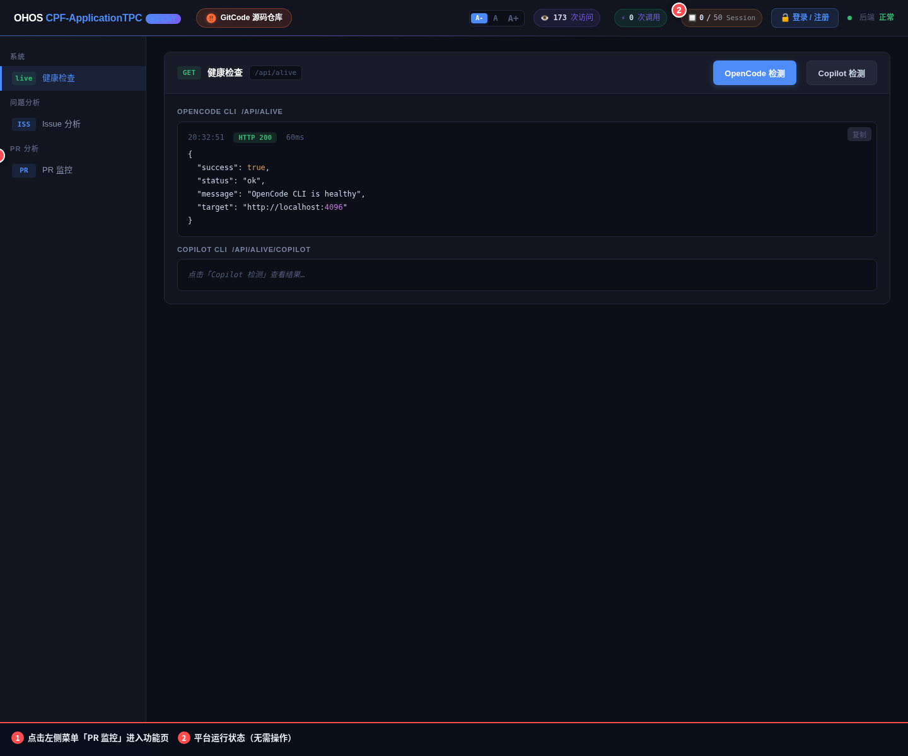
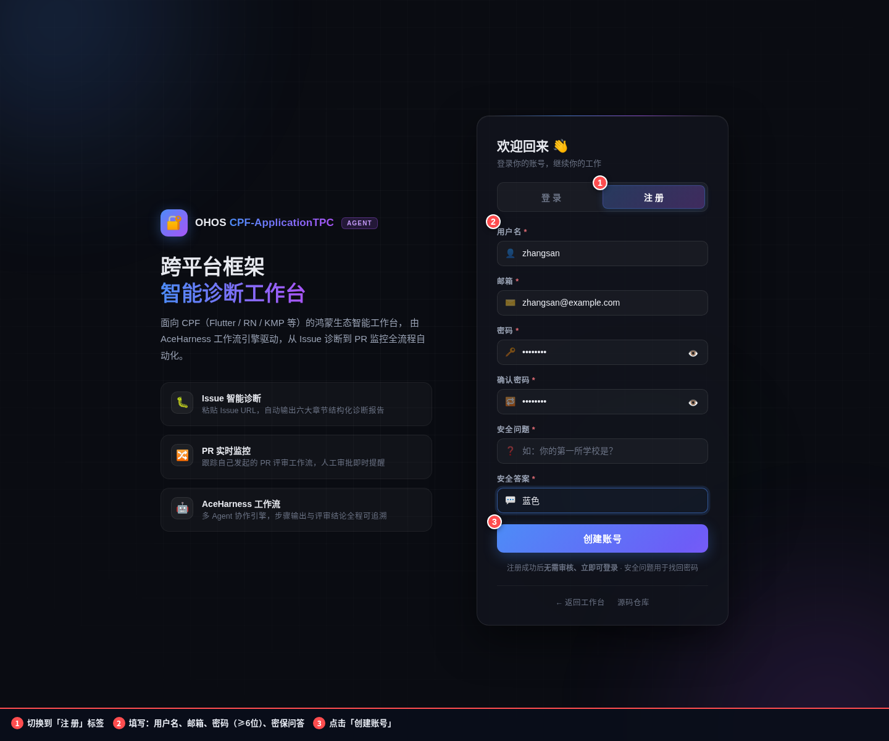
完成标志：登录后进入 PR 监控页，能看到「我的 GitCode PR」列表和你的身份徽章（见下图）。
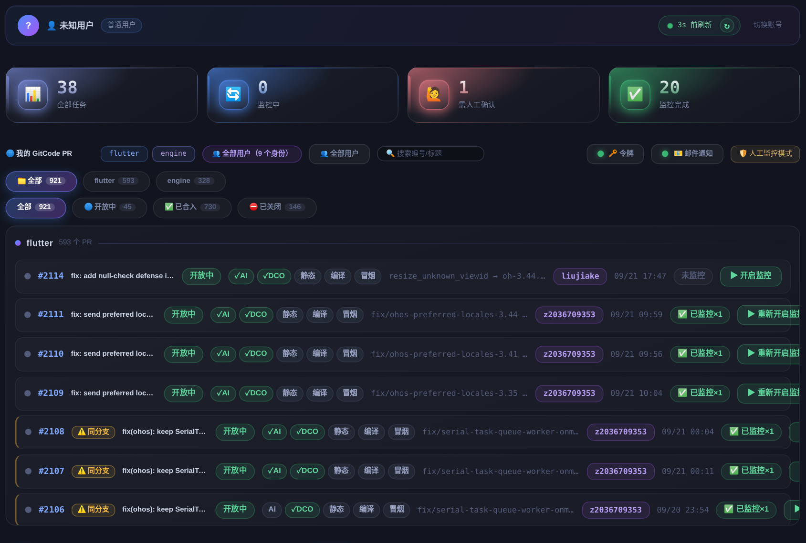
密保问答用于找回密码，请牢记答案。若提示"等待管理员审核"，请联系管理员开通。
2配置 GitCode 令牌 约 1 分钟 · 只需一次
点右上角 「令牌」，粘贴你的 GitCode 私人令牌（准备清单里已生成），点 「✓ 校验并保存」。
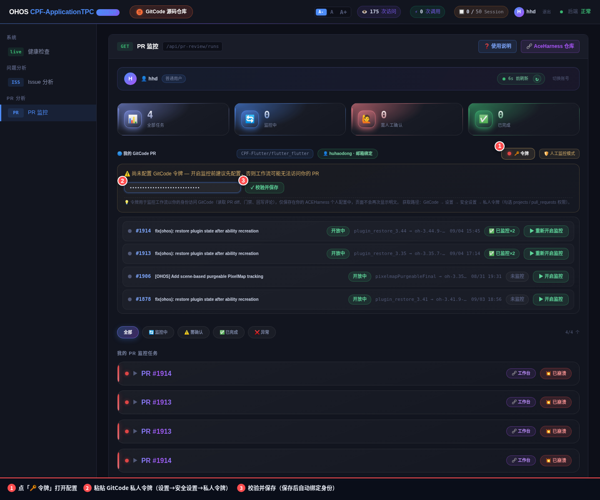
完成标志：令牌按钮的圆点变绿，显示"已配置：你的用户名"；「我的 GitCode PR」自动变成你的 PR 列表。
令牌仅保存在你的个人配置中，页面只显示脱敏值（如 v6xh****7gR5），可随时更新或清除。若暂不想配令牌，也可联系管理员把你的账号邮箱与 GitCode 用户名做绑定（邮箱绑定）。
3开启监控 数秒
「我的 GitCode PR」列表支持双仓切换（flutter / engine 标签）、搜索编号/标题、按 open/merged/closed 状态筛选。找到想检视的 PR，点它右侧的 「开启监控」。系统是人工模式——Webhook 推送不会自动启动任何监控，开关完全由你掌握。
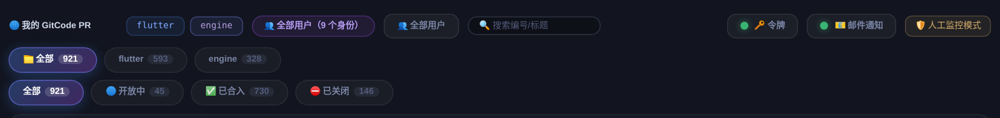
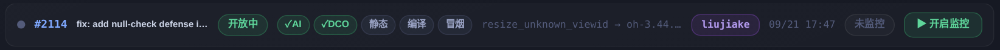
完成标志：该 PR 显示 「监控中」，下方同步出现一张监控任务卡片（见下图）。之后你可以关掉页面，检视在服务器上继续进行。
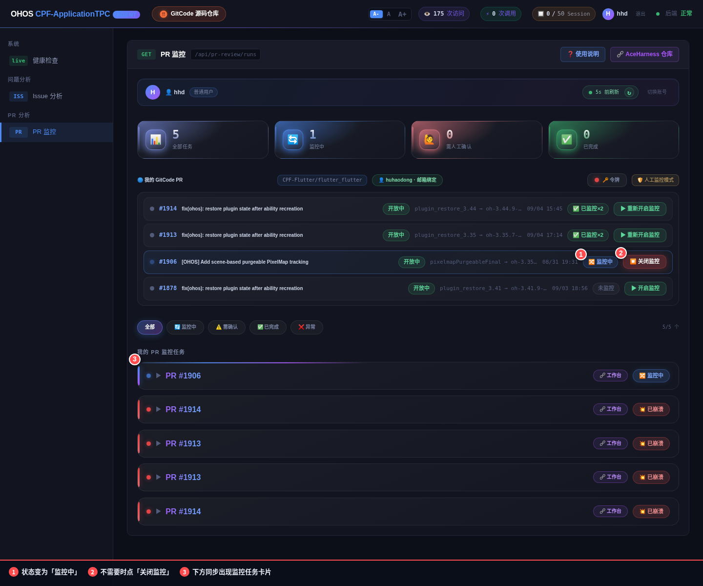
不需要时点 「关闭监控」 即可终止；已结束的任务再次点「开启监控」会保留旧任务历史（不再删除旧记录）。已合入/已关闭的 PR 无法开启（按钮置灰 + 422 拦截）；批量开启按 250ms 短暂错峰串行启动，无需重复点击。
4查看检视结果 自动送达
任务区顶部有统计栏（全部任务 / 监控中 / 需人工确认 / 监控完成，可点击快速筛选）。检视完成后结果在两个地方：① 页面——点任务卡片标题行展开，看步骤时间线、每步耗时与最终评审结论；点「步骤输出」看详情（自动三分类：关键产物 / 按阶段分组 / 折叠的历史归档）；点「检视修复」进入决策闭环（见第 ⑥ 步）。② GitCode——评审结论会自动回写成 PR 评论。
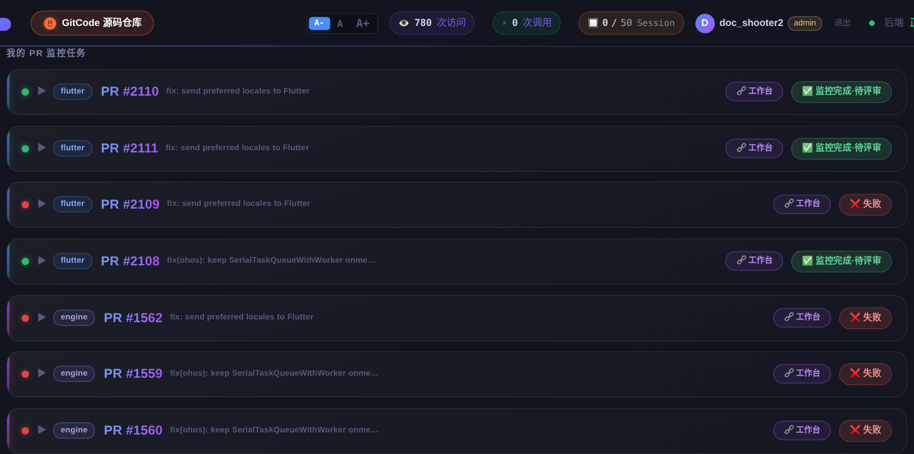
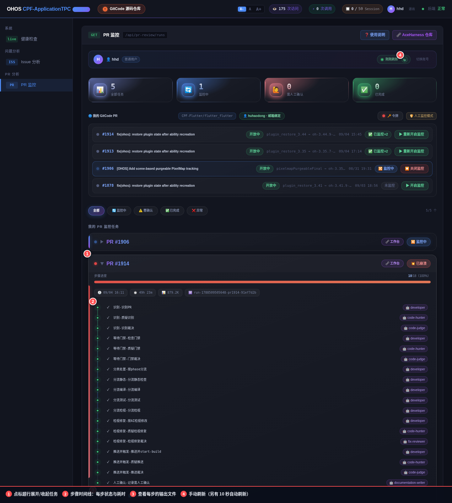
完成标志：任务状态变为 「监控完成·待评审」，展开卡片能看到「最终评审」结论；GitCode PR 评论区出现检视报告。
页面每 10 秒自动刷新，也可点 ↻ 立即刷新；工作流遇到需要人工确认的环节，卡片会显示 「需人工确认」 并附工作台链接。
5门禁标签与邮件通知
门禁状态标签
「我的 PR 列表」的每一行都会实时显示 DCP 门禁五项检查的标签：AI / DCO / 静态 / 编译 / 冒烟。不用点进 GitCode，扫一眼就知道哪个 PR 卡在哪一关、该不该去处理：
✓AI✓DCO✓静态✓编译✓冒烟→ 全部通过，等人工评审合入即可
✓AI✓DCO✓静态✓编译✗冒烟→ 冒烟测试失败（红色），该处理的 PR
AIDCO静态编译冒烟→ 灰色 = 该项还没跑（或进行中），等 CI 出结果
…AI✓DCO静态编译冒烟→ 黄色 = AI 检视进行中
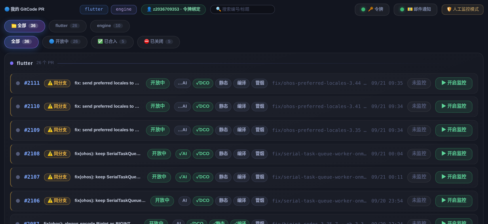
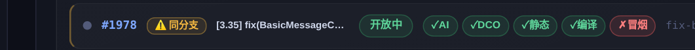
标签数据来自 GitCode 实时同步（约 30 秒缓存）；鼠标悬停在标签组上可看原始标签全名。
邮件通知开关
工具栏（令牌旁边）的 「邮件通知」 按钮控制工作流的邮件提醒：人工确认、门禁全绿、run 结束 等关键节点会发邮件给任务所属人。圆点绿色 = 开启，灰色 = 关闭，点击即切换、立即生效：
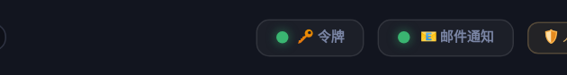
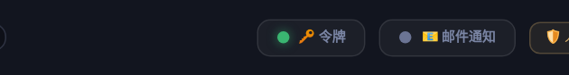
邮件按 PR 归档成一个会话（同一 PR 的所有通知折叠在一起，不会刷屏）；SMTP 未配置时按钮仍可打开，但不会实际发信。
6检视修复决策闭环
展开任务卡片点 「检视修复」，AI 检视意见与修复建议逐条配对展示：左边是检视意见（文件/行号/问题），右边是对应的修复改动（fix.patch diff），每条底部是你的逐条决策：
认可采纳该条修复（可再点取消）
驳回不采纳（可再点取消）
补充建议对该条意见补充你的要求
按建议修改此条让工作流只按这一条意见重新修复
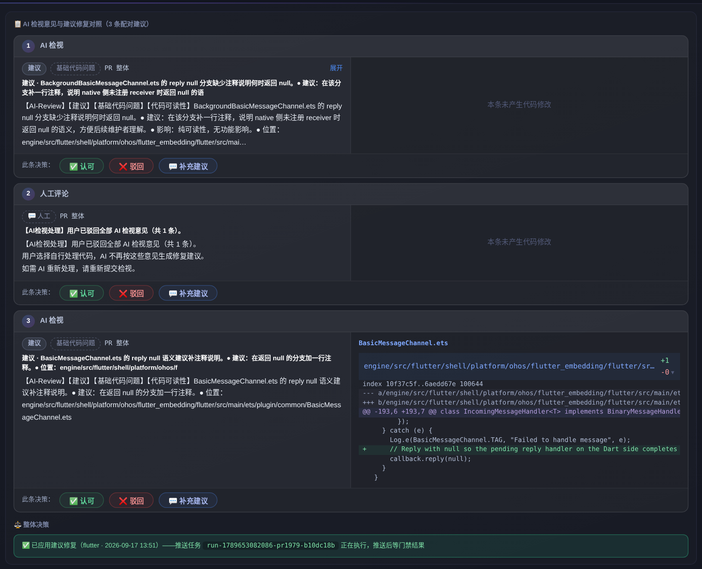
底部「整体决策」实时显示进度（N 认可 · N 驳回 · N 条已决策）。意见发布后 PR 又有新提交的旧意见会自动置灰并标注"↻ 意见后有 push，修复状态未验证"——有新提交不等于已修复。「提交的修改」区即使原任务被清理，也会从历史任务 / GitCode 提交记录自动恢复展示。面板顶部还会显示本次动作的执行回执（已认可→待应用→已提交→已推送→待 CI→已验证，受阻时给出原因）与令牌能力提示。
附状态说明看不懂徽章时查这里
PR 监控状态（我的 PR 列表）
监控中检视正在进行，结果未出
已监控 ×N该 PR 监控过 N 次，当前无进行中任务
未监控从未开启过监控
任务状态（监控任务卡片）
监控中正在运行（含准备/等待阶段）
需人工确认工作流暂停等你处理，点卡片里的链接前往
监控完成·待评审检视完成，结论已生成并回写 PR
已崩溃因服务重启等异常中断，可点「重新开启监控」
已停止你主动关闭或正常结束
门禁标签（PR 行内，详见第 5 步）
✓冒烟绿色 ✓ 该项检查通过
✗冒烟红色 ✗ 该项失败——优先处理的信号
冒烟灰色 未验证（还没跑到 / 进行中）
…AI黄色 … AI 检视进行中
常见问题
提示"未绑定 GitCode 身份"怎么办？
两种方式任选：① 点「令牌」配置私人令牌（推荐，保存即自动绑定）；② 联系管理员在服务端配置你的账号邮箱与 GitCode 用户名的映射（邮箱绑定）。
开启监控后可以关掉网页吗？
可以。检视在服务器上运行，关页面、关电脑都不影响。下次打开页面会自动看到最新进度（也可点 ↻ 立即刷新）。
检视要跑多久？我怎么知道完成了？
视 PR 复杂度而定，可能持续较长时间。完成后无需你做任何事：任务状态自动变为「监控完成·待评审」，评审结论同时回写为 GitCode PR 评论，你去 PR 页面就能看到。
能看到或监控别人的 PR 吗？
不能。PR 列表只展示你绑定身份的 PR，监控任务按账号隔离——你只能看到和操作自己的。（管理员可切换「全部用户」视角并查看管理统计页）
能监控 flutter_engine 仓的 PR 吗？
可以。平台同时监听 flutter_flutter 与 flutter_engine 双仓，列表顶部有仓库切换标签；engine 的 PR 行带 engine 徽章，跨仓同号 PR 不会混淆。
批量开启多个监控，怎么有的还没开始跑？
为防并发压垮引擎，批量开启按 250ms 短暂错峰串行启动。排队中的任务卡片会有提示，无需重复点击。
「检视修复」里点「按建议修改此条」后会发生什么？
工作流会带着该条意见重新进入检视修复，只按这条意见修改后推送并重新触发门禁——不会动其他已认可的修复。多条意见想一起处理时，先逐条「认可/驳回」再用整体决策。
令牌权限怎么设置？每行的读写/只读/禁止选哪个？
推荐配置：用户→只读（校验令牌归属）、项目→只读（读 PR 详情/diff/变更文件）、PR→读写（读门禁状态 + 回写结论）、Notes→读写（发布评论）、Issue→只读（门禁/AI 评审需读 PR 同号 Issue）；key、组织、企业、Hook 选「禁止」；Repository 仅在需要平台代推修复时选「读写」，只读检视可「禁止」。只想只读检视、不回写评论时，把 PR/Notes 降为「只读」即可。完整对照表见顶部「开始前准备」。
任务状态"已崩溃"是什么意思？会丢数据吗？
通常是服务重启等异常导致的中断，历史步骤仍可查看。点「重新开启监控」会开始一次新检视（旧记录自动替换，一个 PR 只保留最新一条任务）。
任务卡片显示"等待 CI 门禁结果"，之后一直不动了？
工作流在门禁出结果后会自动继续（无需操作）。若长时间不动，说明处于人工监控模式——需要你到任务卡片附带的 工作台链接 里操作：可在检查点弹窗提交反馈并点「开始迭代」（工作流会带着你的反馈重新检查门禁），或等 CI 评论 webhook 自动唤醒。
「提交反馈，开始迭代」是干什么的？什么时候用？
当工作流停在检查点（如等待门禁、需人工确认）时，你可以在工作台输入反馈（例如"我已评论 start build，请去检查门禁"）并点「开始迭代」——工作流会把反馈注入上下文并立即带着反馈继续执行，而不是干等。单纯想放行则点「批准」。
邮件通知开了但没收到邮件？
依次检查：① 任务是不是你自己开启的监控（邮件只发给任务所属人）；② 按钮圆点是否为绿色；③ 邮件是否进了垃圾箱（外部 SMTP 来信常被误判）；④ 服务端 SMTP 是否已配置（未配置时不会实际发信，联系管理员）。
忘记密码怎么办？
在登录页使用注册时设置的密保问答找回密码。